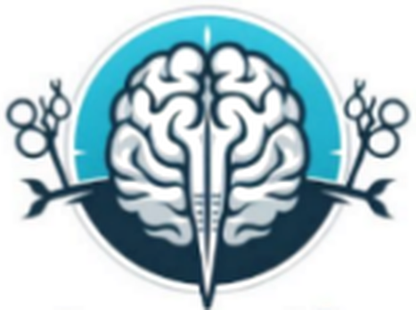

Añade un manuscrito al repositorio. Podrás completar la información y subir más documentos desde su ficha.
Las fechas propias se suman al calendario editorial y pueden generar alertas en el resumen.